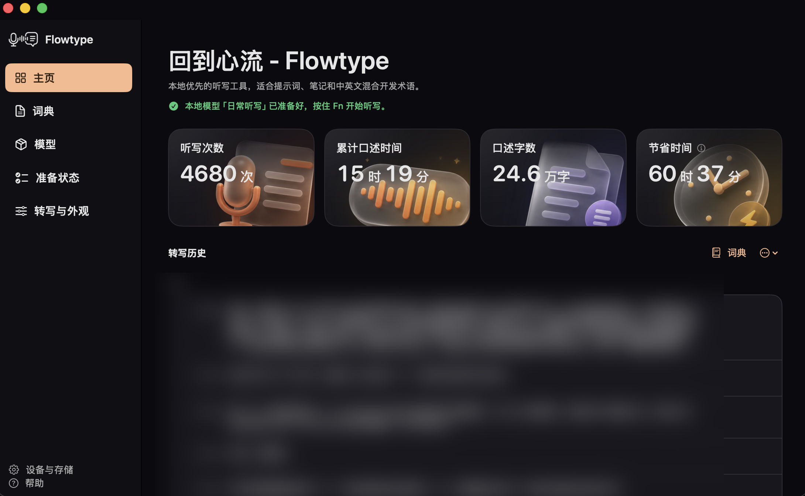

为什么会有 Flowtype
「我在英国读书，给 AI 发统计题，用中文夹着 terminology 口述我的理解。说着说着蹦出英文，又冒出数学符号。市面上的听写工具都接不住这样的话，所以我自己做了一个。」
Flowtype 作者
从第一行 Swift 代码到你看到的这个页面，由一个人完成。它对标的是 Wispr Flow 这样的商业产品，但免费、开源、纯本地。
帮我看一下这个 SwiftUI view，为什么 onAppear 会触发两次？
Flowtype 的全部界面，就这一颗胶囊。
这不是 mock data。作者明确选择公开这张真实使用截图：4,680 次听写、15 小时 19 分钟口述、24.6 万字，估算节省 60 小时 37 分钟。

打开数学模式，说出符号的英文名字，落下来的就是排好的式子，Unicode 或 LaTeX 随你选。它专门处理通用听写工具容易忽略的数学表达场景。
下面每一组都来自 Flowtype 测试集里的真实用例。日常英语和代码不会被误改：说 var x = 1，落下来的还是 var x = 1。
用鼠标按住它
在任何应用里，不用切窗口，不用点按钮。Fn 也不会误触系统表情面板。
想到哪说到哪。中文夹英文、蹦出来的 terminology，都是它的日常。
文字已经贴进光标处，你的剪贴板和输入法原样归还。
Flowtype 使用本地 Qwen3-ASR；Apple Speech 备用路径也只在设备支持 on-device recognition 时运行。音频、转写历史和重试录音都留在这台 Mac。
本地 Qwen3-ASR 模型跑在你的 Apple Silicon 上，断网照样工作。
开启 History 时，最多保留最近 3 条本地录音用于手动重试；你可以关闭历史或在设置中清理这些数据。
日常转写不依赖 Flowtype 自有云服务。软件免费，并以 GPL-3.0-only 开源。
把常用词加进词典，热词会自动参与本地识别。人名、工具名、缩写，不再被写成别的东西。
录音先落盘，转写失败可以恢复重试。说过的话，不会白说。
长听写自动分段转写、补标点，顺手清掉「嗯」「呃」这类口头语。
本地模型没就绪时，Apple Speech 自动顶上，听写不中断。
麦克风与辅助功能权限、模型下载、本地环境，首次启动一次点击全部搞定。
粘贴完成后，剪贴板内容和输入法状态自动还原；菜单栏常驻，没有 Dock 图标，不抢你的注意力。用完即走，回到你正在做的事。
「我在英国读书，给 AI 发统计题，用中文夹着 terminology 口述我的理解。说着说着蹦出英文，又冒出数学符号。市面上的听写工具都接不住这样的话，所以我自己做了一个。」
Flowtype 作者
从第一行 Swift 代码到你看到的这个页面，由一个人完成。它对标的是 Wispr Flow 这样的商业产品，但免费、开源、纯本地。
完整 Apple Silicon DMG 已通过本地 bundle 与 disk-image verification。为了让其他 Mac 正常信任它，正式下载会在 Developer ID signing、Apple notarization 与 Gatekeeper validation 完成后开放。
DMG 待公证后开放计划支持 macOS 14 及以上的 Apple Silicon Mac。首次使用会在你确认后另外下载本地模型文件，需要预留数 GB 存储空间。
安装步骤会以实际发布的 app bundle 为准；在完成签名、Gatekeeper 和干净 Mac 验证前，这里不会提供绕过系统安全检查的命令。